TM-EL Flangeado · Conversor integrado
Sensor flangeado com o conversor montado sobre o tubo. Display e teclas no próprio equipamento.
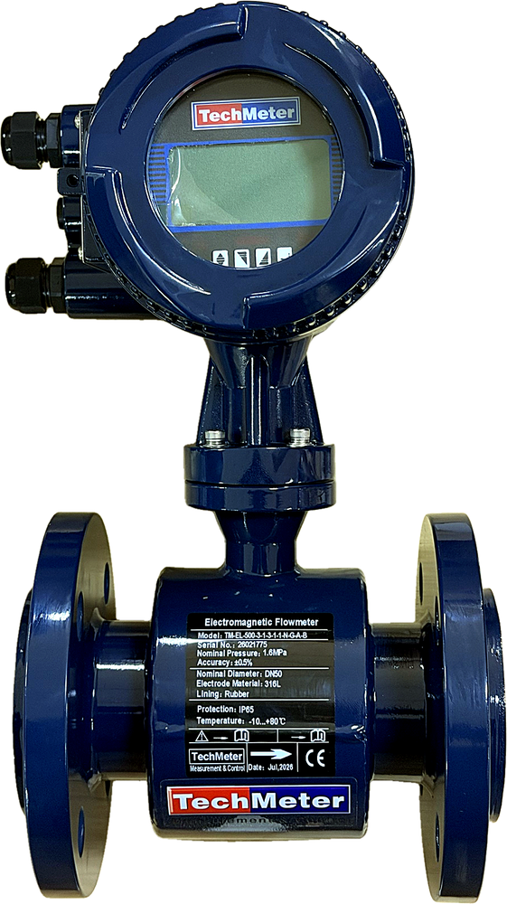
Modelo 3D ilustrativo. Arraste para girar.
Nada encontrado. Tente outra palavra ou fale com o suporte.
1Conheça o equipamento
O medidor eletromagnético mede a vazão de líquidos condutivos (água, efluentes, polpas, químicos) com base na lei de Faraday. Ele não tem partes móveis e não restringe a passagem do fluido, por isso quase não causa perda de carga e exige pouca manutenção.
Este modelo é do tipo integrado (conversor montado sobre o sensor).
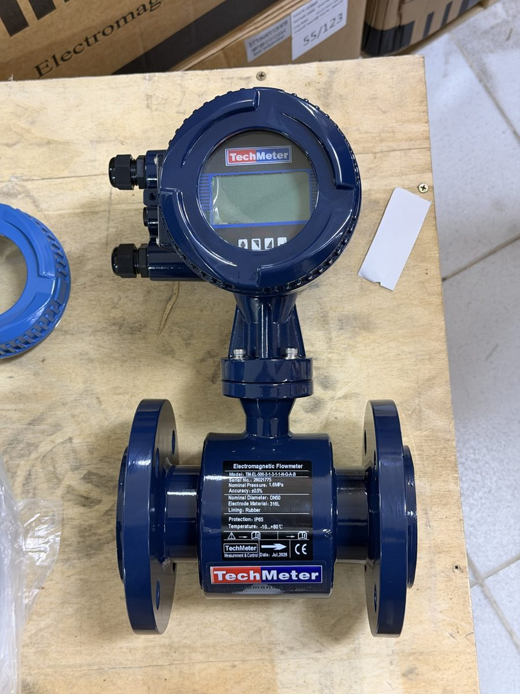
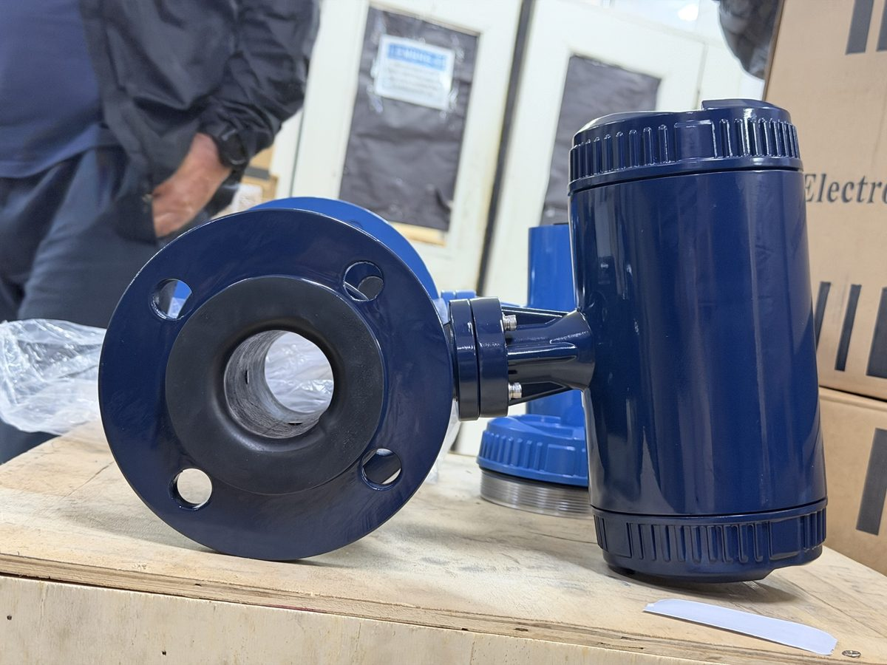
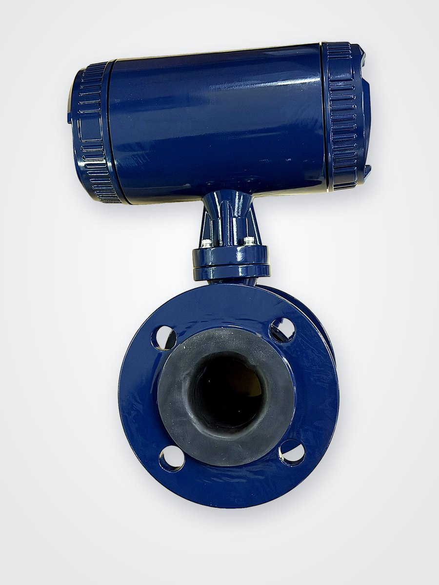
- Condutividade mínima do líquido: 5 µS/cm. Abaixo disso o medidor não funciona (ex.: água destilada, óleos, gases).
- Mede nos dois sentidos e totaliza vazão direta, inversa e a diferença.
- Saídas: corrente (4-20 mA), pulso ou frequência, alarmes e comunicação RS485 / Modbus.
2Recebimento e armazenamento
- Transporte e guarde o medidor na embalagem original até o local da instalação. Não levante o equipamento pelo conversor nem pelos cabos.
- Armazene em local coberto, seco e sem vibração: temperatura de -20 a 60 °C e umidade até 80%.
- Confira na plaqueta: modelo, diâmetro (DN), número de série e fator de calibração. Guarde o certificado de calibração.
3Instalação
Escolha do local
- Prefira local coberto. Ao ar livre, proteja do sol direto, da chuva e de alagamentos.
- Evite locais com vibração forte, campos magnéticos intensos (motores, inversores, transformadores) e atmosfera corrosiva.
- Deixe espaço livre em volta para manutenção e leitura do display.
Tubo sempre cheio
O medidor só mede corretamente com o tubo totalmente cheio de líquido. Por isso:
- Instale em trecho ascendente ou no ponto mais baixo da tubulação. Nunca no ponto mais alto, onde se acumula ar.
- Em descarga livre, instale o medidor antes de um trecho que mantenha o tubo cheio (ex.: sifão ou trecho que sobe).
- Instale o medidor antes da bomba (sucção) e as válvulas de controle e de bloqueio depois do medidor.
- Para líquidos com sólidos, a melhor posição é na vertical, com o fluxo de baixo para cima.
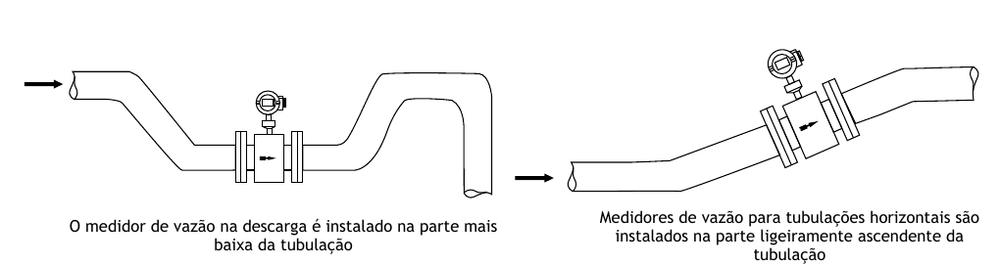
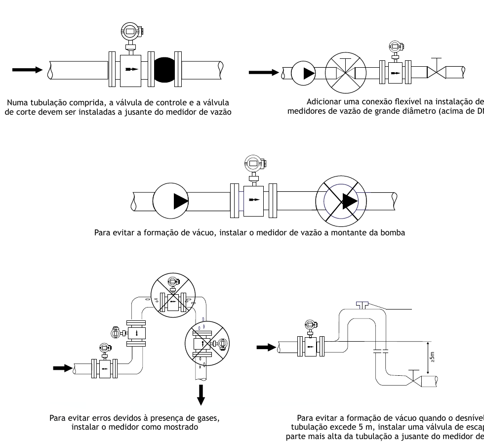
Trechos retos
Para a medição ser precisa, mantenha trechos retos de tubulação antes e depois do medidor. D é o diâmetro da tubulação.
| Situação antes do medidor | Trecho reto antes | Trecho reto depois |
|---|---|---|
| Tubulação reta | 5 D | 3 D |
| Curva | 10 D | 5 D |
| Expansão | 10 D | 5 D |
| Válvula antes do medidor | 10 D | 5 D |
| Redução | 5 D | 2 D |
| Bomba ou manômetro antes do medidor | 15 D | 5 D |
| Mistura de líquidos | 30 D | 3 D |
Ver figuras dos trechos retos
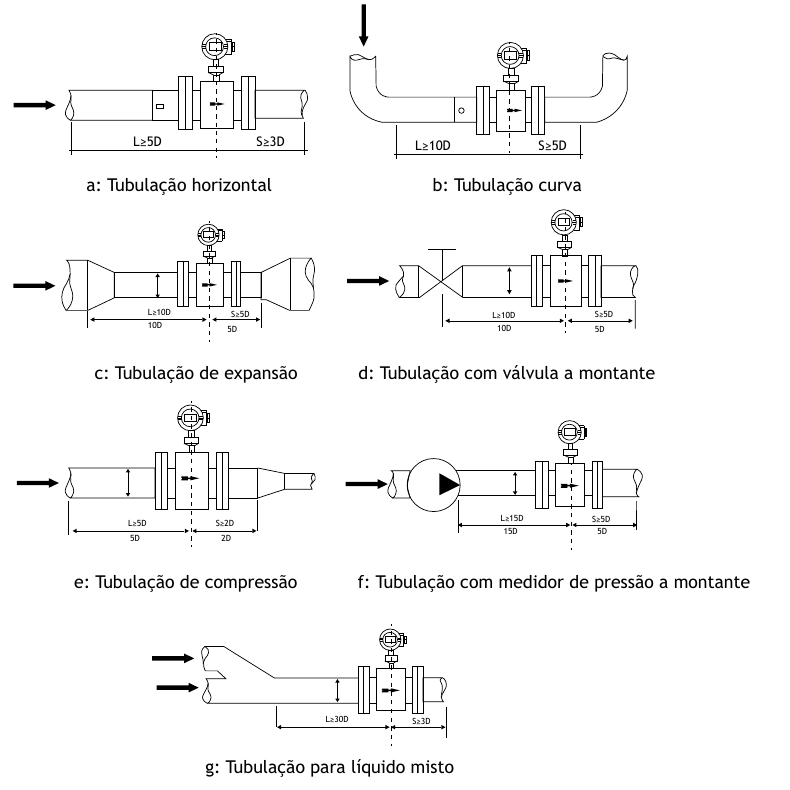
Montagem
- Respeite a seta de sentido do fluxo gravada no medidor.
- O diâmetro da tubulação deve ser igual ao do medidor e os dois devem ficar alinhados (centro com centro).
- Os eletrodos devem ficar na horizontal (o conversor fica para cima ou para o lado, nunca com os eletrodos em cima e embaixo).
- Os flanges devem estar paralelos. Use juntas que não invadam o diâmetro interno.
- Não faça solda elétrica perto do medidor instalado: o calor e a corrente danificam o revestimento e os eletrodos.
- Acima de DN200, use uma junta flexível para facilitar a montagem e evitar esforço no medidor.
- Recomenda-se um by-pass com válvulas para retirar o medidor sem parar o processo.
Aterramento
O aterramento é essencial: sem ele a leitura oscila ou fica errada. A resistência de aterramento deve ser menor que 10 Ω.
- Tubulação metálica sem revestimento: ligue os flanges do medidor aos flanges da tubulação com cabo de cobre de 6 mm² e ao terra.
- Tubulação plástica (PVC, PEAD) ou com revestimento interno: instale anéis de aterramento nos dois lados do medidor, ligados ao terra. Se o medidor já tiver eletrodo de aterramento, os anéis não são necessários.
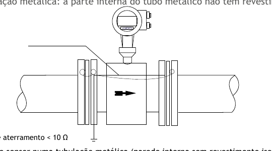
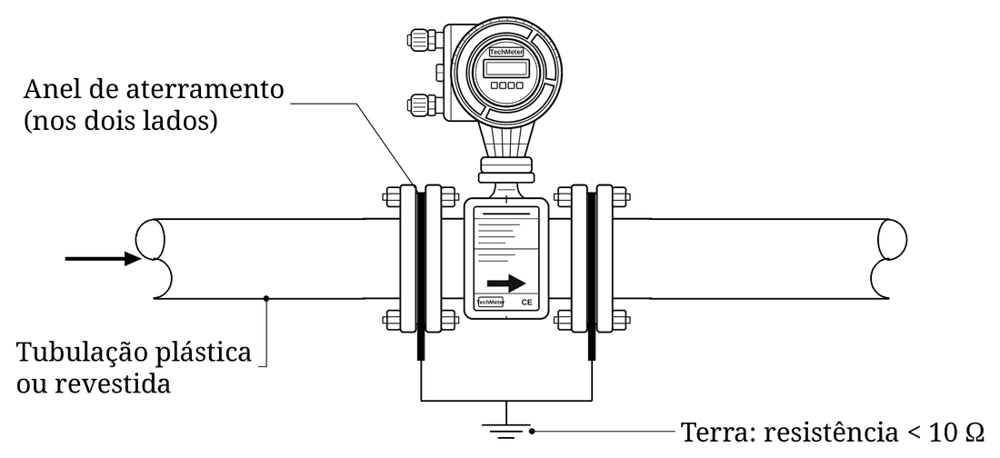
4Ligações elétricas
Os bornes ficam sob a tampa traseira do conversor. Os cabos entram pelos prensa-cabos laterais.
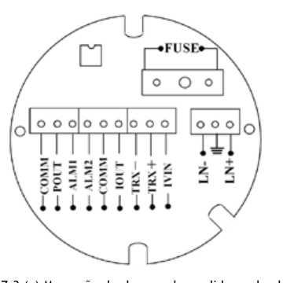
| Borne | Ligação |
|---|---|
| LN+ / LN− | Alimentação 220 Vca (ou 24 Vcc, conforme o modelo) |
| IOUT / COMM | Saída de corrente 4-20 mA (IOUT = sinal, COMM = comum) |
| IVIN | Alimentação 24 Vcc para a saída de corrente a 2 fios |
| POUT / COMM | Saída de pulso ou frequência (coletor aberto) |
| ALM1 / COMM | Alarme de limite superior |
| ALM2 / COMM | Alarme de limite inferior |
| TRX+ / TRX− | RS485 / Modbus (A e B) |
Saídas
- 4-20 mA: carga máxima de 750 Ω. Pode ser ligada a 2, 3 ou 4 fios, conforme o sistema que recebe o sinal.
- Pulso / frequência: saída a coletor aberto, até 35 V e 250 mA. Use fonte externa (5 a 24 V) e resistor de carga. Para acionar relé, coloque diodo em paralelo com a bobina. Pulso e frequência usam o mesmo borne: escolha um dos dois na configuração.
- RS485: cabo par trançado blindado. Use resistor de terminação de 120 Ω só em linhas longas.
- Terra do conversor: ligue o borne PE ao terra com cabo de no mínimo 1,5 mm².
5Display e teclas
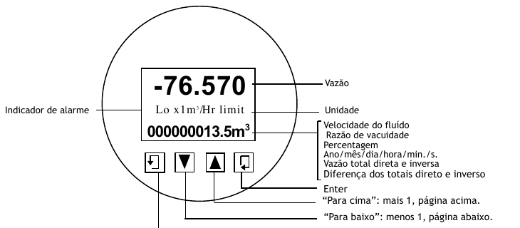
A tela mostra a vazão instantânea na linha de cima e, na linha de baixo, o item escolhido: totalizador direto, inverso ou diferença, velocidade, porcentagem da faixa, data e hora.
| Tecla | Na tela de medição | No menu de configuração |
|---|---|---|
| ▲ Para cima | Troca o item da linha de cima | Aumenta o dígito / página acima |
| ▼ Para baixo | Troca o item da linha de baixo | Diminui o dígito / página abaixo |
| ↵ Enter | — | Entra e sai dos itens. Segurar 2 s volta para a medição |
| F Função | Com ↵: abre o menu · com ▲/▼: ajusta o contraste | Com ▲/▼: move o cursor para a direita / esquerda |
Para usar a tecla Função, mantenha-a pressionada e então aperte a outra tecla. No menu, se nenhuma tecla for usada por alguns segundos, o conversor volta sozinho para a tela de medição.
6Configuração
Antes de configurar
- Confira o aterramento e se o tubo está cheio.
- Na primeira partida, deixe o líquido em contato com os eletrodos por até 48 horas para estabilizar a leitura antes de fazer o ajuste de zero.
Como entrar no menu
- Na tela de medição, aperte F + ↵. Aparece Parameter Setting.
- Aperte ↵ e digite a senha com as setas (F + seta move o cursor).
- Aperte F + ↵ para entrar.
- Use ▲ ▼ para escolher o parâmetro e ↵ para editar e confirmar.
- Para sair, segure ↵ por 2 segundos.
A senha de acesso é informada pela Techmeter junto com o equipamento. Se não tiver, fale com o suporte.
Parâmetros mais usados
| Nº | No display | O que faz | Opções |
|---|---|---|---|
| 5 | Sensor Size | Diâmetro do medidor (já vem de fábrica) | 3 a 3.000 mm |
| 6 | Flow Range | Fundo de escala: vazão que corresponde a 20 mA e a 100% | 0 a 99.999 |
| — | Flow Unit | Unidade da vazão | L/s, L/min, L/h, m³/s, m³/min, m³/h |
| 7 | Flow Rspns | Amortecimento: valores maiores deixam a leitura mais estável e mais lenta | Seleção |
| 8 | Flow Direct | Inverte o sentido do fluxo sem mexer na ligação | Direto / inverso |
| 9 | Flow Zero | Ajuste de zero, com o tubo cheio e o líquido parado | ± mm/s |
| 10 | Flow Cutoff | Corte de vazão baixa: abaixo deste valor o medidor mostra zero | 0 a 99% da escala |
| 12 | Total Unit | Resolução do totalizador | 0,001 L a 1 m³ |
| 14 | Analog Type | Tipo de saída de corrente | 4-20 mA ou 0-10 mA |
| 15 | Pulse Type | Saída de frequência ou de pulso | Freq. / pulso |
| 16 | Pulse Unit | Volume de cada pulso | 0,001 L a 1 m³ |
| 17 | Frequen Max | Frequência que corresponde a 100% da escala | 1 a 5.000 Hz |
| 18 | Mtsensor Ena | Liga o alarme de tubo vazio | Habilitar / desabilitar |
| 21 a 24 | Alm High / Low | Alarmes de vazão alta e baixa, em % da escala | 0 a 199,9% |
| 2 e 3 | Com Address / Baud Rate | Endereço e velocidade da RS485 | 0 a 99 · 600 a 14.400 bps |
| 4 | Com Protocol | Protocolo de comunicação | Tipo 1 (RS485) / Tipo 2 (Modbus) |
Exemplos
Escolher a unidade e o fundo de escala
Escolha uma unidade em que a vazão máxima caiba em 5 dígitos. Se o display mostrar overflow, a unidade está pequena demais. Exemplo: em DN200, 1 m/s equivale a 113.097 L/h (6 dígitos); use m³/h (113,10 m³/h).
Defina Flow Range com a vazão máxima do processo, com uma folga. A saída 4-20 mA e a porcentagem seguem esse valor.
Configurar a saída de pulso para um totalizador ou CLP
Em Pulse Type escolha Pulso e em Pulse Unit o volume de cada pulso (ex.: 1 pulso = 0,01 m³). Mantenha a frequência de pulsos abaixo de 3.000 Hz na vazão máxima: se o volume do pulso for pequeno demais para a vazão, aumente o valor.
Fazer o ajuste de zero
Com o tubo cheio e o líquido parado (válvulas fechadas), entre em Flow Zero e ajuste o valor até a vazão indicada ficar em zero. Anote o valor ajustado.
Zerar o totalizador
No menu, vá até Clr Total Rec, digite a senha de zerar totalizador e confirme com F + ↵. Os totais voltam a zero.
7Alarmes e solução de problemas
Alarmes no display
| Mensagem | Significado |
|---|---|
| FQH · UPPER ALARM | Vazão acima do limite de alarme alto |
| FQL · LOWER ALARM | Vazão abaixo do limite de alarme baixo |
| FGP · LIQUID ALARM | Tubo vazio ou parcialmente cheio |
| SYS · SYSTEM ALARM | Falha na excitação das bobinas |
O que verificar
Display apagado
- Confira se há alimentação nos bornes e se a tensão é a do equipamento (220 Vca ou 24 Vcc).
- Verifique o fusível do conversor.
Alarme de tubo vazio (FGP)
- Confirme se o tubo está realmente cheio (ar na linha, medidor em ponto alto, descarga livre).
- Confira as ligações do sinal (SIG1, SIG2, SGND) no modelo remoto.
- O líquido pode ter condutividade baixa, ou os eletrodos podem estar sujos. Fale com o suporte.
Alarme de excitação (SYS)
- No modelo remoto, confira se os fios EXT+ e EXT− estão bem ligados.
- Se a ligação estiver correta, o conversor ou as bobinas precisam de assistência.
Leitura oscilando ou diferente do esperado
- Verifique o aterramento (causa mais comum).
- Confira se o tubo está cheio e se há bolhas de ar.
- Confira os trechos retos e se há bomba ou válvula muito perto do medidor.
- Confira se o fator do sensor e o zero estão iguais aos da plaqueta / certificado.
- Aumente o amortecimento (Flow Rspns) se o processo for pulsante.
8Especificações
| Característica | Especificação |
|---|---|
| Princípio | Indução eletromagnética (lei de Faraday) |
| Precisão | ±0,5% do valor medido (velocidade ≥ 1 m/s) |
| Velocidade do fluido | 0,3 a 15 m/s (fundo de escala) |
| Condutividade mínima | 5 µS/cm |
| Pressão nominal | 1,6 MPa (até 4,0 MPa sob pedido) |
| Revestimento | PTFE, borracha, poliuretano e outros |
| Eletrodos | Aço inox 316L, Hastelloy B/C, titânio, tântalo, platina-irídio |
| Alimentação | 85 a 265 Vca, 45 a 63 Hz ou 24 Vcc · potência < 20 W |
| Saídas | 4-20 mA ou 0-10 mA · pulso/frequência até 5.000 Hz · 2 alarmes · RS485 / Modbus |
| Temperatura ambiente | Conversor: -10 a 60 °C · sensor: -40 a 80 °C |
| Temperatura do fluido | Até 70 °C (integrado) · até 80 a 150 °C conforme revestimento (remoto) |
| Grau de proteção | IP65 · IP68 no sensor remoto com revestimento de borracha ou poliuretano |
Dimensões (mm) e peso
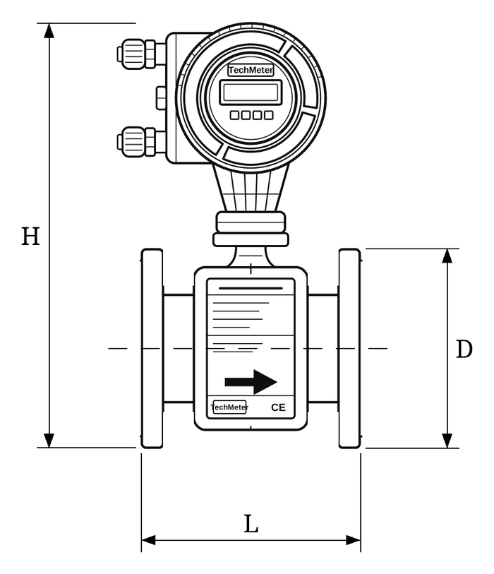
| DN | L | D | H | Peso (kg) |
|---|---|---|---|---|
| 15 | 200 | 95 | 220 | 8 |
| 20 | 200 | 105 | 220 | 10 |
| 25 | 200 | 115 | 223 | 12 |
| 32 | 200 | 140 | 240 | 13 |
| 40 | 200 | 150 | 250 | 14 |
| 50 | 200 | 165 | 263 | 15 |
| 65 | 200 | 185 | 283 | 18 |
| 80 | 200 | 200 | 290 | 20 |
| 100 | 250 | 235 | 318 | 25 |
| 125 | 250 | 270 | 350 | 28 |
| 150 | 300 | 300 | 380 | 30 |
| 200 | 350 | 340 | 430 | 50 |
| 250 | 450 | 405 | 495 | 70 |
| 300 | 500 | 460 | 547 | 95 |
| 350 | 550 | 520 | 602 | 120 |
| 400 | 600 | 580 | 665 | 140 |
| 500 | 600 | 715 | 783 | 200 |
| 600 | 600 | 840 | 897 | 280 |
Flanges conforme GB/T 9119 (PN40 até DN150, PN16 de DN200 a DN600). Outras normas e diâmetros sob consulta.
9Suporte técnico
Dúvidas na instalação ou na configuração? Fale com a assistência técnica Techmeter.
| Canal | Contato |
|---|---|
| (11) 97643-5939 | |
| Telefone | (11) 5071-1630 |
| Suporte técnico | manutencao@techmeter.com.br |
| Comercial | vendas@techmeter.com.br |
| Atendimento | Segunda a sexta, das 8h00 às 17h30 |
Para agilizar, tenha em mãos o modelo e o número de série da plaqueta e, se possível, fotos da instalação e do display.
A Techmeter também faz calibração em laboratório próprio, start-up e manutenção em todo o Brasil.